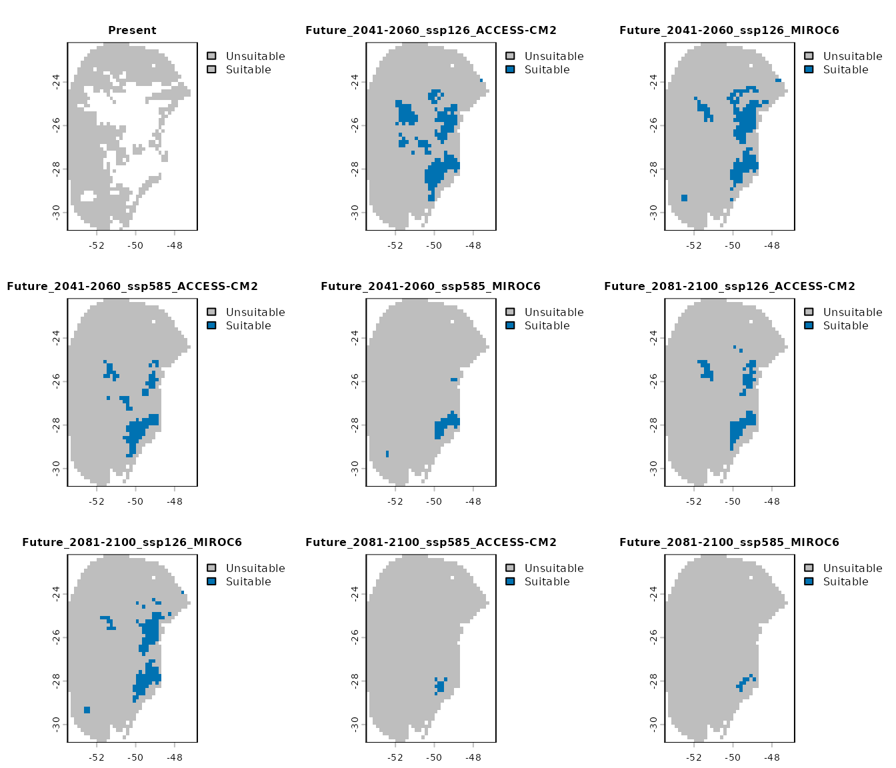
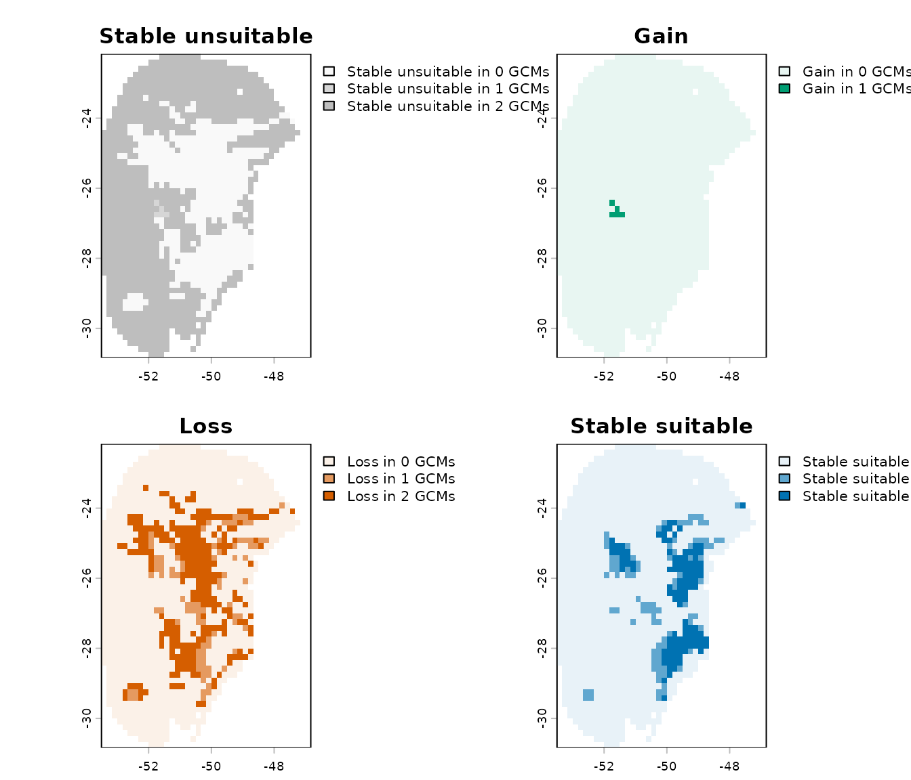

6. Project Models to Multiple Scenarios
Source:vignettes/model_projections.Rmd
model_projections.RmdSummary
- Description
- Getting ready
- Fitted models
- Predictors for projections
- Preparing data for projections
- Projecting to multiple scenarios
- Importing results from projections
- Detecting changes in projections
Description
Once selected models have been fit and explored, projections to
single or multiple scenarios can be performed. The
project_selected() function is designed for projections to
multiple scenarios (i.e., multiple sets of data, each representing
distinct environmental scenarios). This vignette contains examples of
how to use many of the options available for model projections.
Getting ready
At this point it is assumed that kuenm2 is installed (if
not, see the Main guide). Load
kuenm2 and any other required packages, and define a
working directory (if needed).
Note: functions from other packages (i.e., not from base R or
kuenm2) used in this guide will be displayed as
package::function().
# Load packages
library(kuenm2)
library(terra)
# Current directory
getwd()
# Define new directory
#setwd("YOUR/DIRECTORY") # uncomment and modify if setting a new directory
# Saving original plotting parameters
original_par <- par(no.readonly = TRUE)Fitted models
To project selected models, a fitted_models object is
required. For detailed information on model fitting, check the vignette
Fit and Explore Selected Models.
The fitted_models object generated in that vignette is
included as an example dataset within the package. Let’s load it.
# Import fitted_model_maxnet
data("fitted_model_maxnet", package = "kuenm2")
# Print fitted models
fitted_model_maxnet
#> fitted_models object summary
#> ============================
#> Species: Myrcia hatschbachii
#> Algortihm: maxnet
#> Number of fitted models: 2
#> Models fitted with 4 replicatesPredictors for projections
Predicting models for a single scenario requires a single
SpatRaster object containing the predictor variables (as
detailed in Predict Models to a Single
Scenario). In contrast, projecting models to multiple scenarios
requires a folder that stores predictor variables for each scenario
organized in a certain way.
To ensure the following automated process can correctly track variables, the data must follow a strict hierarchical directory structure. At the top level, a Base Directory serves as the primary container for all project data. Inside this base folder, the first level of organization consists of subfolders for distinct Time Periods, such as future years (e.g., “2070”, “2100”) or paleoclimate eras (e.g., “Mid-holocene”, “LGM”). Within each period folder, if applicable, you should include subfolders at the second level for each Emission Scenario (e.g., “ssp126”, “ssp585”). Finally, within each emission scenario or time period folder, the third level should include a separate folder for each General Circulation Model (GCM) (e.g., “BCC-CSM2-MR”, “MIROC6”) to house the actual raster variables. This structured organization enables the function to automatically access and process the data according to period, emission scenario, and GCM.
Preparing predictors from WorldClim
The package provides a function to import future climate variables downloaded from WorldClim (version 2.1). This function renames the files and organizes them into folders categorized by period/year, emission scenario (Shared Socioeconomic Pathways; SSPs), and General Circulation Model (GCM). This simplifies the preparation of climate data, ensuring all required variables are properly structured for modeling projections.
To use this function, download the future raster variables from WorldClim 2.1 and save them all within the same folder. DO NOT rename the files or the variables, as the function relies on the patterns provided in the original files to work properly.
The package also provides an example of raw variables downloaded from WorldClim 2.1. This example includes bioclimatic predictions for the periods “2041-2060” and “2081-2100”, for two SSPs (125 and 585) and two GCMs (ACCESS-CM2 and MIROC6), at 10 arc-minutes resolution.
# See raster files with future predictors provided as example
# The data is located in the "inst/extdata" folder.
in_dir <- system.file("extdata", package = "kuenm2")
list.files(in_dir)
#> [1] "bias_file.tif"
#> [2] "CHELSA_LGM_CCSM4.tif"
#> [3] "CHELSA_LGM_CNRM-CM5.tif"
#> [4] "CHELSA_LGM_FGOALS-g2.tif"
#> [5] "CHELSA_LGM_IPSL-CM5A-LR.tif"
#> [6] "CHELSA_LGM_MIROC-ESM.tif"
#> [7] "CHELSA_LGM_MPI-ESM-P.tif"
#> [8] "CHELSA_LGM_MRI-CGCM3.tif"
#> [9] "Current_CHELSA.tif"
#> [10] "Current_variables.tif"
#> [11] "m.gpkg"
#> [12] "wc2.1_10m_bioc_ACCESS-CM2_ssp126_2041-2060.tif"
#> [13] "wc2.1_10m_bioc_ACCESS-CM2_ssp126_2081-2100.tif"
#> [14] "wc2.1_10m_bioc_ACCESS-CM2_ssp585_2041-2060.tif"
#> [15] "wc2.1_10m_bioc_ACCESS-CM2_ssp585_2081-2100.tif"
#> [16] "wc2.1_10m_bioc_MIROC6_ssp126_2041-2060.tif"
#> [17] "wc2.1_10m_bioc_MIROC6_ssp126_2081-2100.tif"
#> [18] "wc2.1_10m_bioc_MIROC6_ssp585_2041-2060.tif"
#> [19] "wc2.1_10m_bioc_MIROC6_ssp585_2081-2100.tif"
#> [20] "world.gpkg"Note that all variables are in the same folder and retain the
original names provided by WorldClim. You can download these variables
directly from WorldClim
or by using the geodata R package (see example code
below):
# Install geodata if necessary
if (!require("geodata")) {
install.packages("geodata")
}
# Load geodata
library(geodata)
# Create folder to save the raster files
# Here, in a temporary directory
geodata_dir <- file.path(tempdir(), "Future_worldclim")
dir.create(geodata_dir)
# Define GCMs, SSPs and time periods
gcms <- c("ACCESS-CM2", "MIROC6")
ssps <- c("126", "585")
periods <- c("2041-2060", "2061-2080")
# Create a grid of combination of periods, ssps and gcms
g <- expand.grid("period" = periods, "ssps" = ssps, "gcms" = gcms)
g # Each line is a specific scenario for future
# Loop to download variables for each scenario (It can take a while)
lapply(1:nrow(g), function(i) {
cmip6_world(model = g$gcms[i],
ssp = g$ssps[i],
time = g$period[i],
var = "bioc",
res = 10, path = geodata_dir)
}) Let’s check the variables inside the “geodata_dir” folder:
list.files(geodata_dir, recursive = TRUE)
#> [1] "climate/wc2.1_10m/wc2.1_10m_bioc_ACCESS-CM2_ssp126_2041-2060.tif"
#> [2] "climate/wc2.1_10m/wc2.1_10m_bioc_ACCESS-CM2_ssp126_2061-2080.tif"
#> [3] "climate/wc2.1_10m/wc2.1_10m_bioc_ACCESS-CM2_ssp585_2041-2060.tif"
#> [4] "climate/wc2.1_10m/wc2.1_10m_bioc_ACCESS-CM2_ssp585_2061-2080.tif"
#> [5] "climate/wc2.1_10m/wc2.1_10m_bioc_MIROC6_ssp126_2041-2060.tif"
#> [6] "climate/wc2.1_10m/wc2.1_10m_bioc_MIROC6_ssp126_2061-2080.tif"
#> [7] "climate/wc2.1_10m/wc2.1_10m_bioc_MIROC6_ssp585_2041-2060.tif"
#> [8] "climate/wc2.1_10m/wc2.1_10m_bioc_MIROC6_ssp585_2061-2080.tif"
#>
#> #Set climate as input directory
#> in_dir <- file.path(geodata_dir, "climate")Now, we can organize and structure the files using the
organize_future_worldclim() function.
Format for renaming
The argument name_format defines the format for renaming
variables. The names of the variables in the SpatRaster
must precisely match those used when preparing data, even if a PCA was
performed internally (if do_pca = TRUE; see Prepare Data for Model Calibration for
details). If the variables used to create the models were “bio_1”,
“bio_2”, etc., the variables representing other scenarios must be
“bio_1”, “bio_2”, etc. However, if the names don’t match exactly,
projections can fail (always check uppercase letters or zeros before
single-digit numbers (e.g., “Bio_01”, “Bio_02”, etc.). The function
organize_future_worldclim() provides four renaming
options:
-
"bio_": Variables will be renamed tobio_1,bio_2,bio_3,bio_10, etc. -
"bio_0": Variables will be renamed tobio_01,bio_02,bio_03,bio_10, etc. -
"Bio_": Variables will be renamed toBio_1,Bio_2,Bio_3,Bio_10, etc. -
"Bio_0": Variables will be renamed toBio_01,Bio_02,Bio_03,Bio_10, etc.
Let’s check how the variables were named in our
fitted_model:
fitted_model_maxnet$continuous_variables
#> [1] "bio_1" "bio_7" "bio_12" "bio_15"The variables follow the standards of the first option
("bio_").
Static variables
When predicting to other times, some variables could be static (i.e.,
they remain unchanged in scenarios of projections). The
static_variables argument allows users to append static
variables alongside the Bioclimatic ones. First, let’s bring
soilType, which will remain static in future scenarios (we
will use it in a later step).
# Import raster layers (same used to calibrate and fit final models)
var <- rast(system.file("extdata", "Current_variables.tif", package = "kuenm2"))
# Get soilType
soiltype <- var$SoilTypeOrganizing files
Now, let’s organize the WorldClim files with the
organize_future_worldclim() function:
# Create folder to save structured files
out_dir_future <- file.path(tempdir(), "Future_raw") # a temporary directory
# Organize
organize_future_worldclim(input_dir = in_dir, # Path to variables from WorldClim
output_dir = out_dir_future,
name_format = "bio_", # Name format
static_variables = var$SoilType) # Static variables
#> | | | 0% | |========= | 12% | |================== | 25% | |========================== | 38% | |=================================== | 50% | |============================================ | 62% | |==================================================== | 75% | |============================================================= | 88% | |======================================================================| 100%
#>
#> Variables successfully organized in directory:
#> /tmp/RtmpGz6G6B/Future_raw
# Check files organized
dir(out_dir_future, recursive = TRUE)
#> [1] "2041-2060/ssp126/ACCESS-CM2/Variables.tif"
#> [2] "2041-2060/ssp126/MIROC6/Variables.tif"
#> [3] "2041-2060/ssp585/ACCESS-CM2/Variables.tif"
#> [4] "2041-2060/ssp585/MIROC6/Variables.tif"
#> [5] "2081-2100/ssp126/ACCESS-CM2/Variables.tif"
#> [6] "2081-2100/ssp126/MIROC6/Variables.tif"
#> [7] "2081-2100/ssp585/ACCESS-CM2/Variables.tif"
#> [8] "2081-2100/ssp585/MIROC6/Variables.tif"We can check the files structured hierarchically in nested folders
using the dir_tree() function from the fs
package:
# Install package if necessary
if (!require("fs")) {
install.packages("fs")
}
dir_tree(out_dir_future)
#> Temp\RtmpkhmGWN/Future_raw
#> ├── 2041-2060
#> │ ├── ssp126
#> │ │ ├── ACCESS-CM2
#> │ │ │ └── Variables.tif
#> │ │ └── MIROC6
#> │ │ └── Variables.tif
#> │ └── ssp585
#> │ ├── ACCESS-CM2
#> │ │ └── Variables.tif
#> │ └── MIROC6
#> │ └── Variables.tif
#> └── 2081-2100
#> ├── ssp126
#> │ ├── ACCESS-CM2
#> │ │ └── Variables.tif
#> │ └── MIROC6
#> │ └── Variables.tif
#> └── ssp585
#> ├── ACCESS-CM2
#> │ └── Variables.tif
#> └── MIROC6
#> └── Variables.tifAfter organizing variables, the next step is to create an object that prepares things for projections.
Preparing data for projections
To prepare data for model projections across multiple scenarios,
storing the paths to the raster layers representing each scenario, we
use the function prepare_projection().
In contrast to predict_selected(), which requires a
SpatRaster object, when projecting to multiple scenarios,
we need the paths to the folders where the raster files are stored. This
includes the variables for the present time, which were used to
calibrate and fit the models. Currently, we only have the future climate
files. The present-day predictor variables must reside in the same base
directory as the processed future variables. Let’s copy the raster
layers used for model fitting to a folder we can easily direct the
function that runs the next step:
# Create a "Current_raw" folder in a temporary directory
# and copy the rawvariables there.
out_dir_current <- file.path(tempdir(), "Current_raw")
dir.create(out_dir_current, recursive = TRUE)
# Save current variables in temporary directory
terra::writeRaster(var, file.path(out_dir_current, "Variables.tif"))
# Check folder
list.files(out_dir_current)
#> [1] "Variables.tif"Now, we can prepare the data for projections (see the functions
documentation with help(prepare_projection)). In addition
to storing the paths to the variables for each scenario, the function
also verifies if all variables used to fit the final models are
available across all scenarios. To perform this check, you need to
provide either the fitted_models object you intend to use
for projection or simply the variable names. We strongly suggest using
the fitted_models object to prevent any errors.
We also need to define the root directory containing the scenarios for projection (present, past, and/or future), along with additional information regarding time periods, SSPs, and GCMs.
# Prepare projections using fitted models to check variables
pr <- prepare_projection(models = fitted_model_maxnet,
present_dir = out_dir_current, # Directory with present-day variables
past_dir = NULL, # NULL because we won't project to the past
past_period = NULL, # NULL because we won't project to the past
past_gcm = NULL, # NULL because we won't project to the past
future_dir = out_dir_future, # Directory with future variables
future_period = c("2041-2060", "2081-2100"),
future_pscen = c("ssp126", "ssp585"),
future_gcm = c("ACCESS-CM2", "MIROC6"))The projection_data object summarizes information about
all the scenarios we will project to, and shows the root directory where
the predictors are stored:
pr
#> projection_data object summary
#> =============================
#> Variables prepared to project models for Present and Future
#> Future projections contain the following periods, scenarios and GCMs:
#> - Periods: 2041-2060 | 2081-2100
#> - Scenarios: ssp126 | ssp585
#> - GCMs: ACCESS-CM2 | MIROC6
#> All variables are located in the following root directory:
#> /tmp/RtmpGz6G6BIf we check the structure of the prepared_projection
object, we can see it’s a list containing:
- Paths to all variables representing distinct scenarios in subfolders.
- The pattern used to identify the format of raster files within the
folders (by default,
*.tif). - The names of the predictors.
- A list of class
prcompif a Principal Component Analysis (PCA) was performed on the set of variables withprepare_data().
# Open prepared_projection in a new window
View(pr)Projecting to multiple scenarios
After preparing the data, we can use the
project_selected() function to predict selected models
across the scenarios specified in prepare_projection:
# Create a folder to save projection results
# Here, in a temporary directory
out_dir <- file.path(tempdir(), "Projection_results/maxnet")
dir.create(out_dir, recursive = TRUE)
# Project selected models to multiple scenarios
p <- project_selected(models = fitted_model_maxnet,
projection_data = pr,
out_dir = out_dir,
write_replicates = TRUE,
progress_bar = FALSE) # Do not print progress barThe function returns a model_projections object. This
object is similar to the prepared_data object, storing
information about the projections performed and the folder where results
were saved.
print(p)
#> model_projections object summary
#> ================================
#> Models projected for Present and Future
#> Future projections contain the following periods, scenarios and GCMs:
#> - Periods: 2041-2060 | 2081-2100
#> - Scenarios:
#> - GCMs: ACCESS-CM2 | MIROC6
#> All raster files containing the projection results are located in the following root directory:
#> /tmp/RtmpGz6G6B/Projection_results/maxnetNote that results were saved hierarchically in nested subfolders,
each representing a distinct scenario. In the base directory, the
function also saves a file named “Projection_paths.RDS”, which is the
model_projections object. This object can be imported into
R using the readRDS() function.
dir_tree(out_dir)
#> Temp\Projection_results/maxnet
#> ├── Future
#> │ ├── 2041-2060
#> │ │ ├── ssp126
#> │ │ │ ├── ACCESS-CM2
#> │ │ │ │ ├── General_consensus.tif
#> │ │ │ │ ├── Model_192_consensus.tif
#> │ │ │ │ ├── Model_192_replicates.tif
#> │ │ │ │ ├── Model_219_consensus.tif
#> │ │ │ │ └── Model_219_replicates.tif
#> │ │ │ └── MIROC6
#> │ │ │ ├── General_consensus.tif
#> │ │ │ ├── Model_192_consensus.tif
#> │ │ │ ├── Model_192_replicates.tif
#> │ │ │ ├── Model_219_consensus.tif
#> │ │ │ └── Model_219_replicates.tif
#> │ │ └── ssp585
#> │ │ ├── ACCESS-CM2
#> │ │ │ ├── General_consensus.tif
#> │ │ │ ├── Model_192_consensus.tif
#> │ │ │ ├── Model_192_replicates.tif
#> │ │ │ ├── Model_219_consensus.tif
#> │ │ │ └── Model_219_replicates.tif
#> │ │ └── MIROC6
#> │ │ ├── General_consensus.tif
#> │ │ ├── Model_192_consensus.tif
#> │ │ ├── Model_192_replicates.tif
#> │ │ ├── Model_219_consensus.tif
#> │ │ └── Model_219_replicates.tif
#> │ └── 2081-2100
#> │ ├── ssp126
#> │ │ ├── ACCESS-CM2
#> │ │ │ ├── General_consensus.tif
#> │ │ │ ├── Model_192_consensus.tif
#> │ │ │ ├── Model_192_replicates.tif
#> │ │ │ ├── Model_219_consensus.tif
#> │ │ │ └── Model_219_replicates.tif
#> │ │ └── MIROC6
#> │ │ ├── General_consensus.tif
#> │ │ ├── Model_192_consensus.tif
#> │ │ ├── Model_192_replicates.tif
#> │ │ ├── Model_219_consensus.tif
#> │ │ └── Model_219_replicates.tif
#> │ └── ssp585
#> │ ├── ACCESS-CM2
#> │ │ ├── General_consensus.tif
#> │ │ ├── Model_192_consensus.tif
#> │ │ ├── Model_192_replicates.tif
#> │ │ ├── Model_219_consensus.tif
#> │ │ └── Model_219_replicates.tif
#> │ └── MIROC6
#> │ ├── General_consensus.tif
#> │ ├── Model_192_consensus.tif
#> │ ├── Model_192_replicates.tif
#> │ ├── Model_219_consensus.tif
#> │ └── Model_219_replicates.tif
#> ├── Present
#> │ └── Present
#> │ ├── General_consensus.tif
#> │ ├── Model_192_consensus.tif
#> │ ├── Model_192_replicates.tif
#> │ ├── Model_219_consensus.tif
#> │ └── Model_219_replicates.tif
#> └── Projection_paths.RDSBy default, separated by each scenario, the function computes consensus metrics (mean, median, range, and standard deviation) for each model across its replicates (if replicates were performed), as well as a general consensus across all models (if more than one model was selected).
By default, the function does not write these individual replicates
unless write_replicates = TRUE is set. It is important to
write the replicates if you intend to compute the variability deriving
from them in later steps (check Explore Variability and
Uncertainty in Projections).
The function project_selected() accepts several other
parameters that control how predictions are done, such as consensus to
compute, extrapolation type (free extrapolation (E),
extrapolation with clamping (EC), and no extrapolation
(NE)), variables to restrict, and the format of prediction
values (raw, cumulative,
logistic, or the default cloglog). For more
details, consult the vignette for Predict models to single scenario.
Importing results from projections
The model_projections object stores only the paths to
the resulting raster layers. To import the results, we can use the
import_results() function. By default, it imports all
consensus metrics (“median”, “range”, “mean”, and “stdev”) and all
scenarios (time periods, SSPs, and GCMs) available in the
model_projections object. Let’s import the mean for all
scenarios:
# Import mean of each projected scenario
p_mean <- import_results(projection = p, consensus = "mean")
# Plot all scenarios
terra::plot(p_mean, cex.main = 0.8)
Alternatively, we can import results from specific scenarios. For example, let’s import the results only for the “2041-2060” time period under the SSP 126:
# Importing
p_2060_ssp126 <- import_results(projection = p, consensus = "mean",
present = FALSE, # Do not import present projections
future_period = "2041-2060",
future_pscen = "ssp126")
# Plot all scenarios
terra::plot(p_2060_ssp126, cex.main = 0.8)
With the model_projections object, we can compute
changes in suitable areas (projection_changes()), explore
variability patterns coming from replicates, parameterizations, and GCMs
(projection_variability()), and perform analysis of
extrapolation risks (projection_mop()). For more details,
check Explore Variability and
Uncertainty in Projections.
# Reset plotting parameters
par(original_par) Detecting changes in projections
When projecting a model to different scenarios (past or future), suitable areas can be classified into three categories relative to the current baseline: gain, loss and stability. The interpretation of these categories depends on the temporal direction of the projection.
When projecting to future scenarios:
- Gain: Areas currently unsuitable become suitable in the future.
- Loss: Areas currently suitable become unsuitable in the future.
- Stability: Areas remain the same in the future, suitable or unsuitable.
When projecting to past scenarios:
- Gain: Areas unsuitable in the past are suitable in the present.
- Loss: Areas suitable in the past are unsuitable in the present.
- Stability: Areas remain the same in the present, suitable or unsuitable.
These outcomes may vary across different General Circulation Models (GCMs) within each time scenario (e.g., various Shared Socioeconomic Pathways (SSPs) for the same period).
The projection_changes() function summarizes the number
of GCMs predicting gain, loss, and stability for each time scenario.
By default, this function writes the summary results to disk (unless
write_results is set to FALSE), but it does
not save binary layers for individual GCMs. In the example below, we
demonstrate how to configure the function to return the raster layers
with changes and write the binary results to disk.
# Run analysis to detect changes in suitable areas
changes <- projection_changes(model_projections = p,
output_dir = out_dir,
write_bin_models = TRUE, # Write individual binary results
return_raster = TRUE)Setting colors for maps
Before plotting the results, we can use the
colors_for_changes() function to assign custom colors to
areas of gain, loss, and stability. By default, the function uses ‘teal
green’ for gains, ‘orange-red’ for losses, ‘Oxford blue’ for areas that
remain suitable, and ‘grey’ for areas that remain unsuitable. However,
you can customize these colors as needed.
The intensity of each color is automatically adjusted based on the
number of GCMs: highest (as defined by max_alpha) when all
GCMs agree on a prediction, and decreases progressively (down to
min_alpha) as fewer GCMs support that outcome.
# Set colors for change maps
changes_col <- colors_for_changes(changes)The function returns the same changes_projections
object, but with color tables embedded in its SpatRasters.
These colors are automatically applied when visualizing the data using
terra::plot().
Types os results
The projection_changes() function returns four types of
results: binary model prediction, results by GCM, results by change, and
a general summary considering all GCMs:
-
Binary prediction for each GCM: These are
suitable/unsuitable maps for each individual GCM. By default, the
omission error threshold used when selecting the best models is used
(e.g., 10%). You can specify a different threshold using the
user_thresholdargument.
terra::plot(changes_col$Binarized, cex.main = 0.8)
- Results by GCM: provides the changes identified in comparisons (gain, loss, stability) for each GCM individually.
terra::plot(changes_col$Results_by_gcm, cex.main = 0.8)
-
Results by change: a list where each
SpatRasterrepresents a specific type of change (e.g., gain, loss, stability) across all GCMs for a given scenario.
# Results by change for the scenario of 2041-2060 (ssp126)
terra::plot(changes_col$Results_by_change$`Future_2041-2060_ssp126`)
- Summary changes: provides a general summary indicating how many GCMs project gain, loss, and stability for each scenario.

Importing Results
When return_raster = TRUE is set, the resulting
SpatRaster objects are returned within the
changes_projections object. By default, however,
return_raster = FALSE and the object only contains the
directory path where the results were saved. In that case, the results
can be imported using the import_results() function. You
can specify the type of results to import, along with the target period
and emission scenario.
A changes_projections object imported using
import_results() can also be used as input to
colors_for_changes() to customize the colors used for
plotting.
For example, below we import only the general summary for the 2041–2060 period under the SSP5-8.5 scenario:
# Import changes detected for 2041–2060 SSP5-8.5
general_changes <- import_results(projection = changes,
future_period = "2041-2060",
future_pscen = "ssp585",
change_types = "summary")
# Set colors
general_changes <- colors_for_changes(general_changes)
# Plot
terra::plot(general_changes$Summary, main = names(general_changes$Summary),
plg = list(cex = 0.75)) # Decrease size of legend text
Saving results
The changes_projections object is a list that contains
the resulting SpatRaster objects (if
return_raster = TRUE) and the directory path where results
were saved (if write_results = TRUE).
If results were not written to disk during the initial run, you can
save SpatRaster objects afterward using the
writeRaster() function. For example, to save the general
summary raster:
writeRaster(changes$Summary_changes,
file.path(out_dir, "Summary_changes.tif"))If the results were saved to disk, the
changes_projections object is automatically stored in a
folder named Projection_changes inside the specified
output_dir. You can load it back into R using
readRDS():
After saving, this object can be used to import specific results with
the import_results() function.